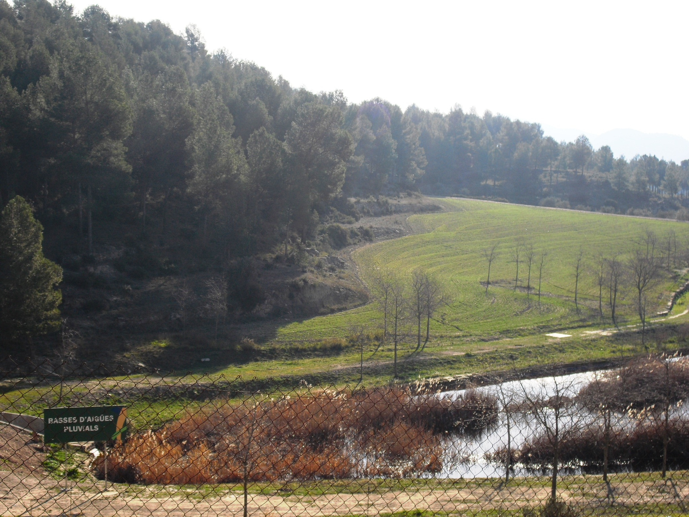

El Parc Ambiental de Bufalvent és propietat del Consorci del Bages per la gestió de residus, que és l’entitat pública que gestiona els residus municipals al Bages i part del Moianès: en fa la recollida i el tractament i treballa per canviar els hàbits de la ciutadania.Al Parc Ambiental de Bufalvent és on es fa el tractament de residus i, a més, és un espai paisatgístic privilegiat. Està situat al terme municipal de Manresa i el tractament de residus hi conviu amb un entorn ple d’oliveres, barraques de vinya, boscos i animals que hi pasturen. El respecte pel territori i el medi ambient es fa palès en aquest espai, amb unes vistes espectaculars sobre la comarca i sobre Montserrat.
El Consorci del Bages per a la gestió de residus gestiona serveis públics de recollida selectiva, deixalleries i tractament de residus municipals. Fomenta l’educació ambiental, treballant en xarxa amb el Camp d’Aprenentatge del Bages, i promou la comunicació ambiental impulsant programes educatius i campanyes.El Consorci del Bages per a la gestió de residus gestiona serveis públics de recollida selectiva, deixalleries i tractament de residus municipals. Fomenta l’educació ambiental, treballant en xarxa amb el Camp d’Aprenentatge del Bages, i promou la comunicació ambiental impulsant programes educatius i campanyes.
Les restes d’orgànica que separes a casa es recull separadament a partir del contenidor marró o el cubell del porta a porta. El Consorci del Bages les recull i les porta a la planta de compostatge del Parc ambiental de Bufalvent.Les restes de menjar i poda, després de ser tractades i amb un control exhaustiu de la humitat i la temperatura durant tot el procés, estransformen en compost, un adob de gran qualitat per a l’agricultura, l’horticultura i la jardineria.
La fracció resta que arriba al Parc ambiental de Bufalvent va al dipòsit controlat de residus, conegut popularment com abocador. Allà, els residus s’aixafen, es compacten i s’enterren. Aquests materials acaben la seva vida útil a l’abocador i no es poden reciclar ni valoritzar. Quan una part del dipòsit està plena, s’obre una nova zona per enterrar els residus, i l’antiga queda clausurada i es restaura, plantant-hi vegetació per aconseguir el mínim impacte ambiental i paisatgístic.